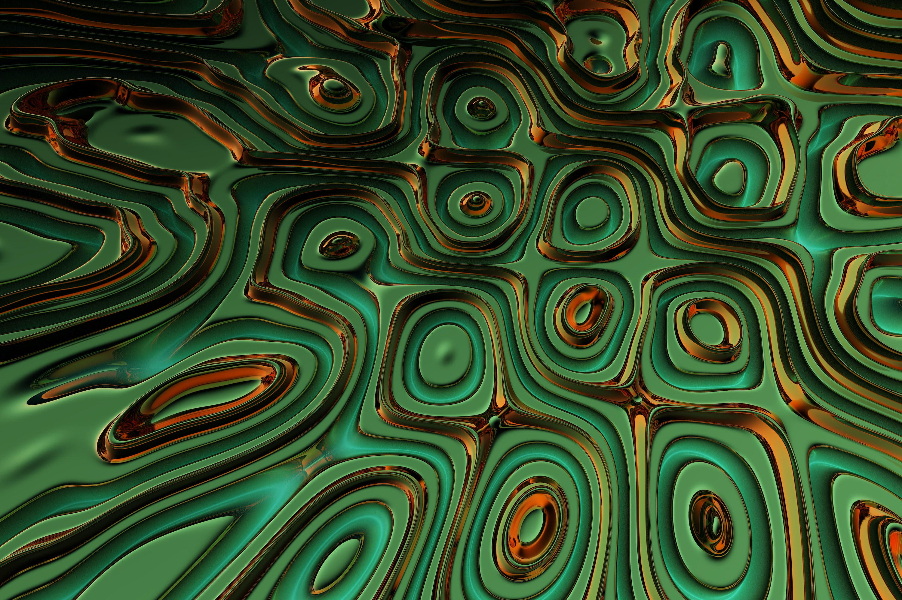
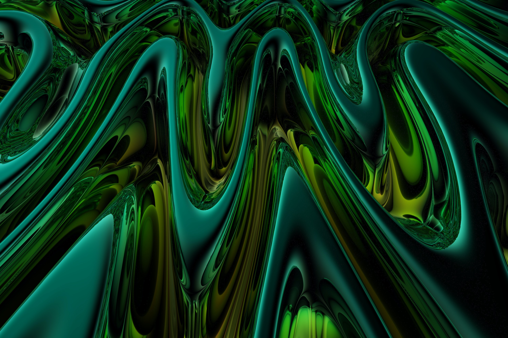
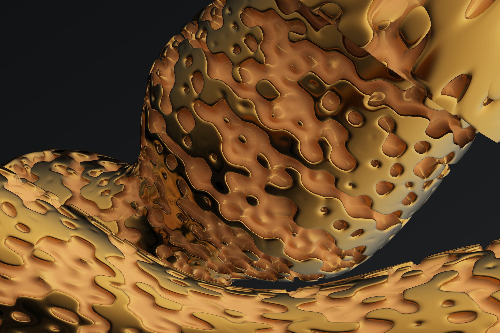

Assignment 7.2: Build a Web Page Exercise - Part 4
Green and Gold Abstract Image

(Author: Rick Rothenberg)
Green and Black Abstract Image

(Author: Rick Rothenberg)
Yellow and Brown Abstract Image

(Author: Rick Rothenberg)